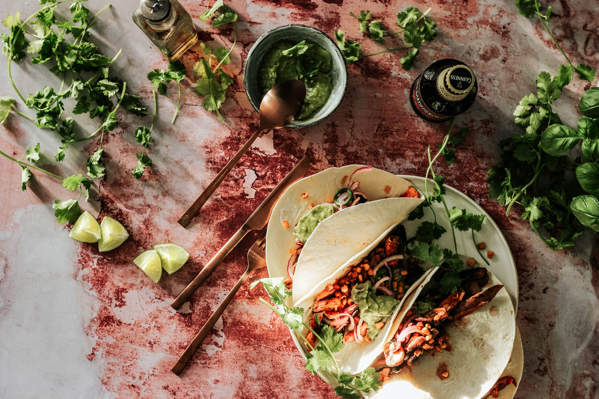

Tuna Wraps

This is a clean, nutritious and easy-to-make meal for those looking to meal prep for gym in a short amount of time.
Can be easily prepared and eaten before or after a workout
Ingredients
- One can of tuna
- Mayonnaise
- 50g Lettuce
- 50g Jalapenos
- 2x Tortilla Wraps
Instructions
- Drain the tuna, and add it to a bowl with mayonnaise, adding just enough mayo to make sure the consistency of the tuna is easily edible
- Slice the jalapenos into small pieces
- Slice the lettuce into strips
- Add both the lettuce and jalapenos to the tuna and mix
- Finally, place half your tuna mixture into each tortilla wrap and wrap them up however you like!
To find other recipes, visit our Homepage.